Vraag 1
Vijf jaar geleden heeft een jonge vrouw een ileocoecaal resectie ondergaan. De reden voor deze operatie was een therapie resistente stenose van het terminale ileum. Sindsdien heeft zij zich onttrokken uit de controles. Zij meldt zich met vermoeidheidsklachten.
Welke vitamine deficiëntie ligt het meest voor de hand?
Vraag 2
Welke histopathologisch beeld past bij de diagnose dysplasie in een Barrett segment? Bekijk de vier beelden (A t/m D) in de afbeelding.
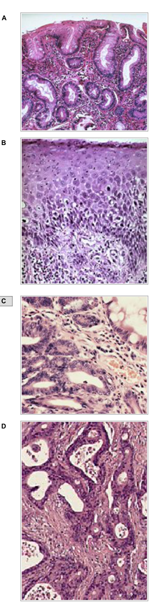
Vraag 3
Je verdenkt een patiënt van het hebben van een maagcarcinoom. Aanvullend onderzoek (gastroduodenoscopie met biopten) toont aan dat het om een intestinaal type adenocarcinoom gaat van de maag.
Welke bewering is juist over een intestinaal type adenocarcinoom?
Vraag 4
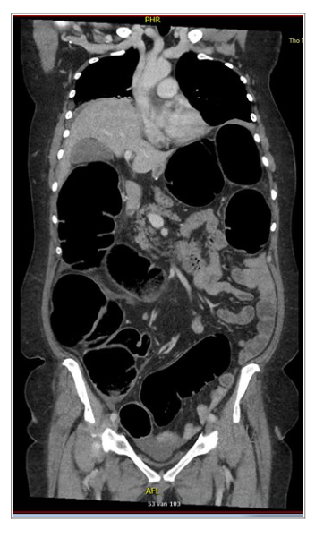
Kies de juiste alternatieven.
De patiënte heeft in verband met mechanische ileus een ondergaan; dit zijn de coupes; in de fase.
Vraag 5
Bij een 62-jarige patiënt, in goede fysieke toestand, wordt een T2N1M1 oesophaguscarcinoom vastgesteld.
Op basis van deze stagering zal het behandelvoorstel bestaan uit:
Vraag 6
Een 72-jarige patiënte is ondervoed op basis van verminderde intake en een verhoogd verbruik bij een recent gediagnosticeerd pancreascarcinoom. Het voedsel passeert goed. Je besluit dat de patiënt bijvoeding nodig heeft.
Wat is de eerste keuze?
Vraag 7
Een man van 86 jaar oud, recent gediagnosticeerd met een oesophaguscarcinoom, komt op de polikliniek chirurgie voor een preoperatieve intake. Hij weegt 95 kg, lengte 1.77m, BMI is 30 kg/m². Hij heeft flinke passageproblemen. Hij is minstens 2 kg afgevallen in de afgelopen 3 maanden.
Welke uitspraak is juist?
Vraag 8
Een 23-jarige vrouw heeft progressieve passageklachten voor vast en vloeibaar voedsel en heeft inmiddels 6 kg gewichtsverlies. Bij gastroscopie werden geen bijzonderheden gezien. Slokdarmbiopten waren zonder afwijkingen. Aanvullend wordt een slokdarmmanometrie verricht in verband met verdenking op achalasie.
Wat zijn in dit geval de te verwachte kenmerkende manometrie-bevindingen die de diagnose achalasie zouden bevestigen?
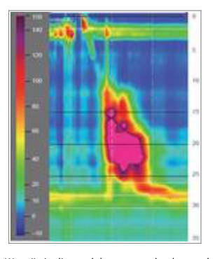
Vraag 9
Een 20-jarige vrouw bezoekt de polikliniek in verband met klachten van aanvalsgewijs frequent boeren. Het boeren komt in aanvallen van soms 20 keer per minuut en de aanvallen kunnen minuten tot soms wel een kwartier duren. Het boeren beperkt patiënte ernstig in haar sociaal en werkzaam leven. Tussen de aanvallen door zijn er geen klachten, er zijn geen alarmsymptomen.
Wat is in dit geval de meest waarschijnlijke diagnose?
Vraag 10
Wat is de juiste behandeling van een 63-jarige man met een PA bewezen adenocarcinoom in het corpus van de maag cT3N0M0?
Vraag 11
Wat is de meest voorkomende slokdarmaandoening?
Vraag 12
Bij welke van de onderstaande bewering moet je alert zijn op ondervoeding?
Vraag 13
Uit welke wandlagen bestaat de maag? Vink er vier aan.
Meerdere antwoorden mogelijk.
Vraag 14
Welke factoren dragen bij aan het ontstaan van ondervoeding? Vink drie aan.
Meerdere antwoorden mogelijk.
Vraag 15
Een 52-jarige man verwijst u naar de MDL-arts voor een gastroscopie. Hij vaste voedsel zakt niet goed.
Welke endoscopisch beeld past bij deze klachten? Bekijk de beelden A, B en C in de afbeelding.
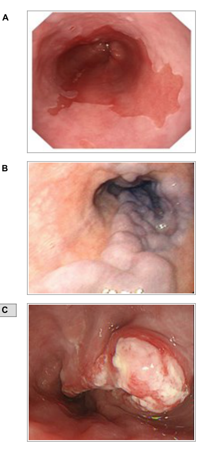
Vraag 16
Een 28-jarige patiënt wordt verwezen naar de polikliniek ivm levertest afwijkingen. Je verricht onder andere serologisch onderzoek naar hepatitis B. Je krijgt de volgende uitslagen van het laboratorium; HBsAg negatief, anti-HBc negatief en anti-HBs positief.
Dit betekent dat de patiënt:
Vraag 17
Een 32-jarige patiënt komt op het spreekuur met klachten van spierkrampen en ook coördinatiestoornissen. Bij lichamelijk onderzoek (neurologisch) kijk je ook naar de ogen in verband met pupilreflexen (zie afbeelding).
Dit beeld past het meest bij:
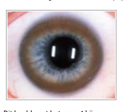
Vraag 18
Een 42-jarige patiënte heeft klachten van moeheid en jeuk. Bloedonderzoek toont een licht verhoogd alkalische fosfatase en bilirubine. De antimitochondriale antistoffen waren positief. Er volgt een biopt van de lever (zie afbeelding).
Dit beeld past het best bij de diagnose:
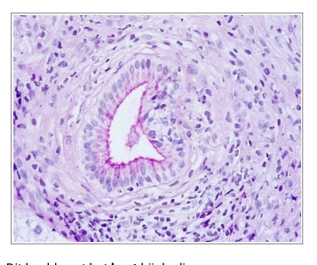
Vraag 19
Een 42-jarige vrouw komt bij de huisarts in verband met intermitterende klachten van icterus. Je besluit om laboratorium onderzoek te doen. Op dat moment is het bilirubine laag, het gGT licht gestegen en het Alkalische Fosfatase ook, de overige leverfuncties zijn normaal.
Wat is je eerste diagnostische stap?
Vraag 20
Een 37-jarige obese man presenteert zich op de SpoedEisende Hulp in verband met pijn in de rechter bovenbuik, ten gevolge van een steen die vast zit in de ductus choledochus. Welke laboratorium waarden verwacht je afwijkend te zullen zijn?
CRP
Bilirubine
Gamma GT
Alkalische Fosfatase
ASAT
ALAT
Vraag 21
Een 83-jarige man heeft vijf jaar geleden een milde biliaire pancreatitis doorgemaakt. Hierna werd een expectatief beleid gevoerd. Twee weken geleden is hij opgenomen met een cholangitis, hier is hij goed van hersteld. Tijdens de opname zijn de bloedwaarden genormaliseerd. Inmiddels is hij uit het ziekenhuis ontslagen en zit hij bij jou op de polikliniek.
Wat is de volgende stap?
Vraag 22
Wat is de meest voorkomende vorm van kanker waar een levertransplantie voor wordt verricht?
Vraag 23
Een 54-jarige man van Chinese afkomst is bekend met Hepatitis C. Om een cirrose uit te sluiten verricht je een echo abdomen. Hierop wordt een lesie gezien van 2 cm in diameter.
Wat is de meest waarschijnlijk diagnose?
Vraag 24
Een 54-jarige man heeft in de afgelopen maanden een porta trombose op basis van een pancreaskopcarcinoom.
Welke bewering is juist?
Vraag 25
Welk type hepatitis komt wereldwijd het meest voor?
Vraag 26
Een 56-jarige man wordt opgenomen met een pancreatitis. Op dag 2 van de opname is het CRP opgelopen tot 240 mg/l (normaal <10). Op dag 28 van de opname ontwikkelt de patiënt acute pijn in de bovenbuik en een temperatuursverhoging (38,6 C).
Met welke complicatie van pancreatitis denk je nu van doen te hebben?
Vraag 27
Uit welke onderdelen is de MELD score opgebouwd?
Vraag 28
Kies het juiste beeldvormend onderzoek bij de juiste vraagstelling.
Sleep een optie naar de bijbehorende rij, of tik eerst op een kaart en dan op een rij.
Hepatocellulair carcinoom
Sleep hier naartoe
Diverticulitis
Sleep hier naartoe
Metastasen coloncarcinoom
Sleep hier naartoe
Vraag 29
Een 53-jarige man is de vorige avond opgenomen op de afdeling Maag-, Darm- en Leverziekten in verband met een biliaire pancreatitis. Deze pancreatitis heeft op basis van de laboratorium uitslagen een voorspeld ernstig beloop.
Op welk moment besluit je een CT abdomen te maken?
Vraag 30
Wat is de meest voorkomende oorzaak van acute pancreatitis?
Vraag 31
Een 47-jarige man, heeft een alcohol verslaving. Hij presenteert zich met icterus. Je wil een alcoholische levercirrose diagnosticeren. Je vraagt een echo abdomen aan en bloedonderzoek.
Hoe stel je deze diagnose in het laboratorium onderzoek?
Vraag 32
Hoeveel levervolume kun je bij een gezonde volwassene maximaal reseceren?
Vraag 33
Wat is de gouden standaard om een coloncarcinoom te diagnosticeren?
Vraag 34
Een 46-jarige vrouw meldt zich op de SpoedEisende Hulp. In het afnemen van een anamnese en het doen van lichamelijk onderzoek verdenk je haar van een cholecystitis acuta.
Hoe bevestig je deze diagnose?
Vraag 35
Een 23-jarige vrouw presenteert zich op de SpoedEisende Hulp in verband met pijn in de rechter onderbuik. Zij heeft sinds 24 uur verminderde eetlust, haar temperatuur is verhoogd tot 38,4°C. In het bloed onderzoek is het CRP en het leukocyten getal verhoogd.
Welke diagnoses mogen niet in de differentiaal diagnose ontbreken?
Vraag 36
Een 61-jarige vrouw heeft sedert enkele dagen klachten van pijn in de linker onderbuik en koorts van 38,9°C. De ontlasting komt ook moeizaam en er zit een beetje bloed bij. Bij lichamelijk onderzoek is de linker onderbuik gevoelig.
Wat is de meest aannemelijke diagnose?
Vraag 37
Een patiënte met colitis ulcerosa behoudt, ondanks maximale medicamenteuze therapie, klachten als 15-20 keer per dag bloederige ontlasting en toenemende buikpijnklachten. Ondanks maximale medicamenteuze therapie, knapt patiënt niet op. Bij bloedonderzoek worden de volgende waarden gevonden. Hemoglobine 7.2 mmol/l, Leukocyten aantal 15.7 × 10⁹/L, C-reactive protein (CRP) 256 mg/L.
Wat is nu de meest waarschijnlijke diagnose?
Vraag 38
Een 28-jarige man (lengte 1.70m, gewicht 90 kg) is al jaren bekend bij de MDL-arts op de poli vanwege een colitis ulcerosa. Hij gebruikt geen medicatie voor zijn colitis, omdat zijn klachten tot nu vrij mild zijn. Het laboratoriumonderzoek toont een afwijkende leverfunctie: het bilirubine, gamma-glutamyltransferase (ɣGT) en alkalisch fosfatase (AF) zijn verhoogd.
Wat is de meest waarschijnlijke diagnose?
Vraag 39
Kies de juiste alternatieven.
Een 66-jarige man komt naar de SpoedEisende Hulp, hij heeft klachten van een ileus. Hij heeft nu 5 dagen geen ontlasting gehad en een opgeblazen bolle buik. Je besluit een CT scan te maken, hierop zie je een voor tumor verdachte afwijking in het sigmoid. De juiste diagnose is een ileus.
Vraag 40
Bij colonoscopie vind je een voor coloncarcinoom verdachte afwijking op de coecumbodem.
Welke bewering is juist? Deze patiënt zal tevens klachten hebben van:
Vraag 41
Bij een 75-jarige vrouw met buikpijn en een veranderd ontlastingspatroon wordt diverticulitis geconstateerd. Zij heeft koorts tot 39°C, een CRP van 253 mg/L. Op de CT-scan zie je een geperforeerde diverticulitis, met in vier kwadranten vrij vocht en vrij lucht.
Wat is in dit geval de behandeling van eerste keuze?
Vraag 42
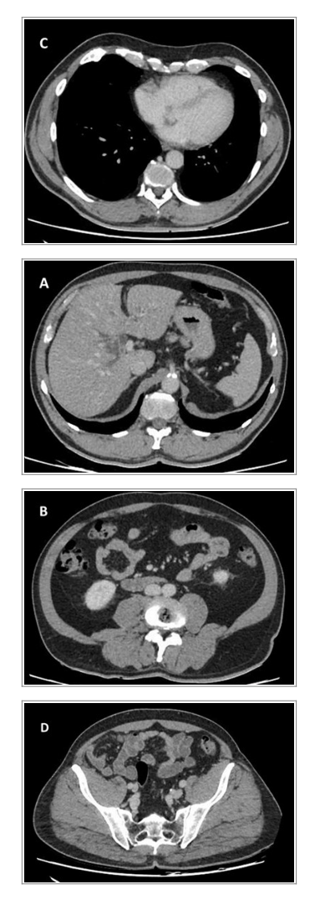
Plaats deze scan coupes in de juiste volgorde van CRANIAAL naar CAUDAAL. Geef per positie aan welke coupe (A t/m D) daar hoort.
Sleep een optie naar de bijbehorende rij, of tik eerst op een kaart en dan op een rij.
Positie 1 (meest craniaal)
Sleep hier naartoe
Positie 2
Sleep hier naartoe
Positie 3
Sleep hier naartoe
Positie 4 (meest caudaal)
Sleep hier naartoe
Vraag 43
Een vrouw van 64 jaar heeft langzaam progressieve klachten van fecale incontinentie. Ze heeft 3 partussen gehad, waarvan 1 middels een tangverlossing. Ze heeft 2x daags ontlasting. Bij rectaal toucher voelt u een slappe kringspier.
Wat doet u?
Vraag 44
De bovenstaande foto werd gemaakt bij een patiënt op de SpoedEisende Hulp. In verband met ernstige lumbago had hij twee weken lang 3dd 100mg diclofenac gebruikt. Bij lichamelijk onderzoek vertoont hij tekenen peritoneale van prikkeling in alle vier kwadranten.
Wat is de meest waarschijnlijke diagnose?
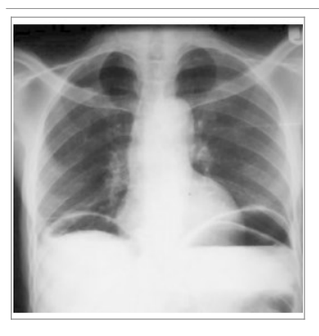
Vraag 45
Wat zijn de meest voorkomende locaties waar een rechtszijdig coloncarcinoom naar uitzaait?
Vraag 46
Een 57-jarige patiënte van Kaukasische afkomst presenteert zich bij de MDL-arts met een microcytaire anemie en diarree (forse hoeveelheid, grijze brijige ontlasting). Zij gebruikt tijdelijk medicatie i.v.m. een blaasontsteking; te weten nitrofurantoine.
De oorzaak van de diarree is meest waarschijnlijk:
Vraag 47
Een 31-jarige vrouw heeft klachten van vermoeidheid en frequente (15x per dag), niet gevormde ontlasting met bloed bijmenging. De klachten bestaan nu 1 week. Er wordt besloten endoscopisch onderzoek te laten verrichten met biopten van het slijmvlies. Histologisch en endoscopisch beeld: zie afbeelding.
U besluit behandeling te starten en volgens de richtlijnen is de eerste keuze:
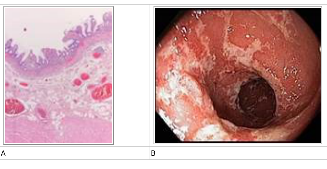
Vraag 48
Bij een coloscopie van een 28-jarige vrouw ziet u in het coecum het volgende beeld (zie afbeelding).
De juiste diagnose en behandeling is:
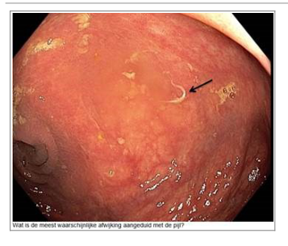
Vraag 49
Een patiënt ligt opgenomen op een afdeling in het ziekenhuis in verband met een status na hemicolectomie gecompliceerd door een naadlekkage en intra-abdominale abcessen. Na enkele dagen ontwikkelt hij diarree.
Wat is de meest waarschijnlijk oorzaak en welke behandeling is eerste keus?
Vraag 50
Een 24-jarige vrouw heeft laparoscopische appendectomie ondergaan. Peroperatief bleek er sprake te zijn van een gangreneus ontstoken appendix, deze werd laparoscopisch verwijderd. Post-operatief kreeg zij gedurende 5 dagen antibiotica. Op de 8e post-operatieve dag komt zij naar de SpoedEisende Hulp, zij heeft piekende koorts, met name in de avond. Bij lichamelijk onderzoek is er slinger en opstootpijn, bij het verrichten van een vaginaal en rectaal toucher.
Welke complicatie is het meest waarschijnlijk?
Vraag 51
Welke kenmerken heeft de regel van Courvoisier?
Meerdere antwoorden mogelijk.
Vraag 52
Alarmsymptomen bij maagklachten. Patiënten met maagklachten kunnen symptomen vertonen die kunnen duiden op ernstige pathologie (zoals een maligniteit). Men spreekt daarbij van alarmsymptomen, waarbij op korte termijn endoscopisch onderzoek moet worden verricht.
Wat zijn de vijf alarmsymptomen?
Meerdere antwoorden mogelijk.
Vraag 53
Een huisarts ziet op het spreekuur een vrouw van 63 jaar. Zij heeft sinds twee dagen buikpijn die in heftigheid is toegenomen. De ergste pijn zit in de rechteronderbuik, komt in aanvallen en is dan zeer hevig. Sinds vandaag moet ze vrijwel ieder uur braken. Gisteren heeft ze een keer wat dunne ontlasting gehad. Bij onderzoek is de temperatuur 37,9°C. De pols is 88/minuut, de bloeddruk is 135/75 mmHg. Bij onderzoek van de buik hoort de huisarts gootsteengeruisen. Bij palpatie is de buik soepel, maar rechtsonder wel erg pijnlijk. Haar voorgeschiedenis vermeldt een verwijderd ovarium rechts.
Wat is de meest waarschijnlijke diagnose op basis van deze bevindingen?
Vraag 54
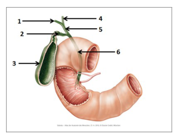
Met welk nummer worden de onderdelen van de galwegen aangeduid?
Sleep een optie naar de bijbehorende rij, of tik eerst op een kaart en dan op een rij.
Galblaas
Sleep hier naartoe
Ductus choledochus
Sleep hier naartoe
Ductus hepatica sinister
Sleep hier naartoe
Vraag 55
Kies de juiste alternatieven.
Verspreiding van rondworminfecties naar nieuwe gastheren vindt meestal plaats door overdracht van eieren. Bij welke rondworm zijn de larven voor de mens infectieus? Bij . Je loopt deze op .
Vraag 56
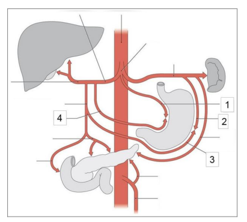
Met welk nummer wordt welke arteriële structuur aangeduid?
Sleep een optie naar de bijbehorende rij, of tik eerst op een kaart en dan op een rij.
Nummer 1
Sleep hier naartoe
Nummer 2
Sleep hier naartoe
Nummer 3
Sleep hier naartoe
Nummer 4
Sleep hier naartoe